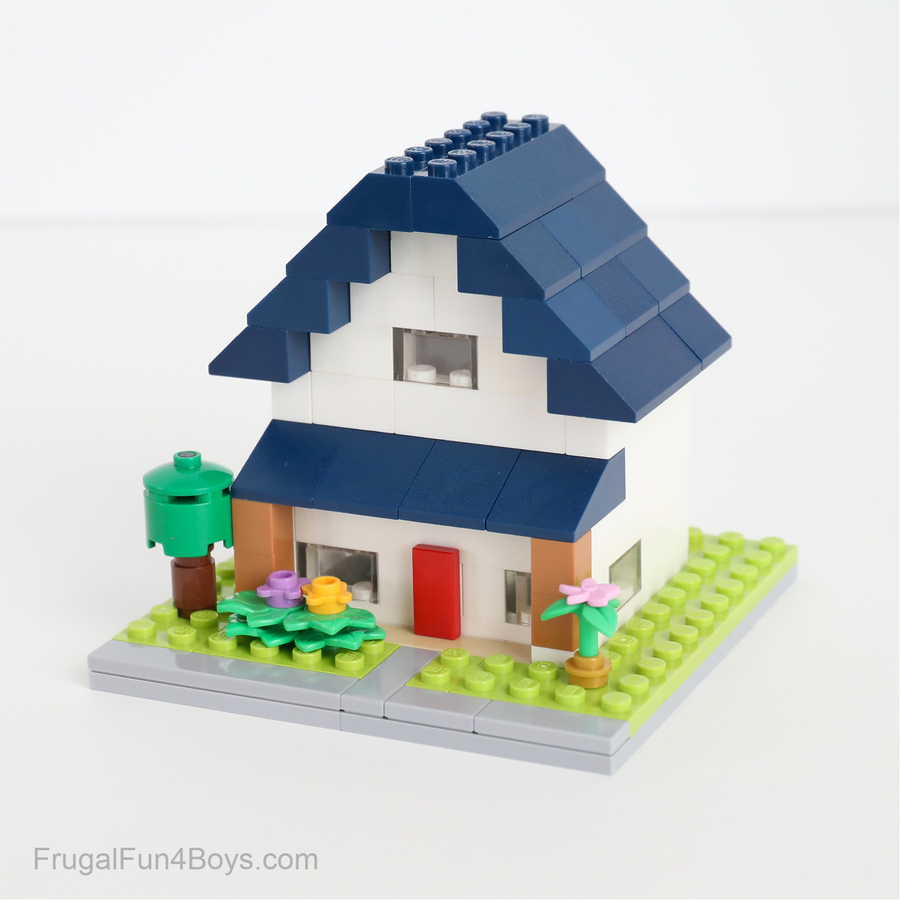
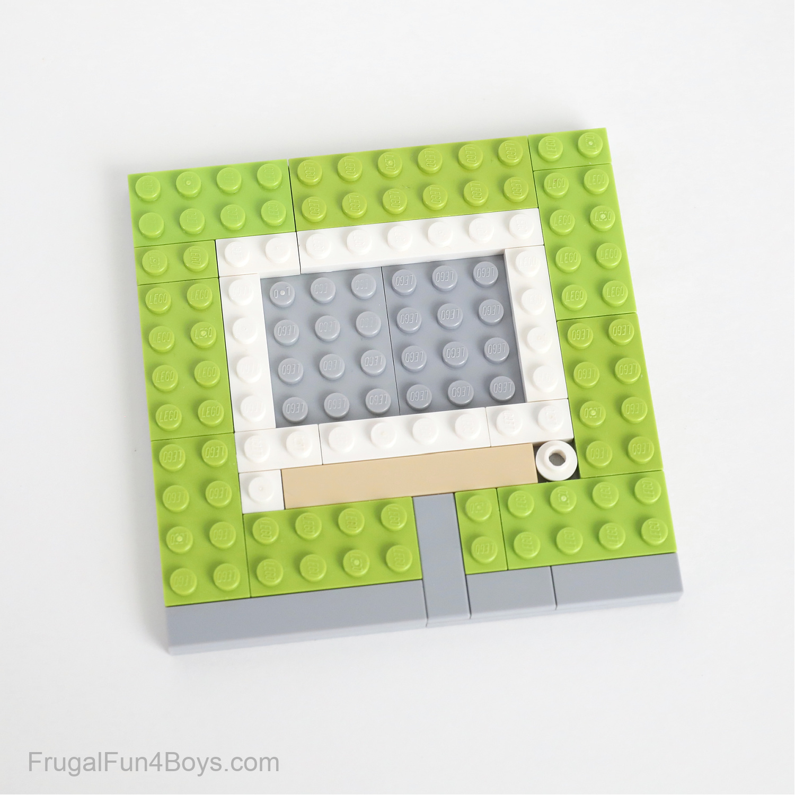
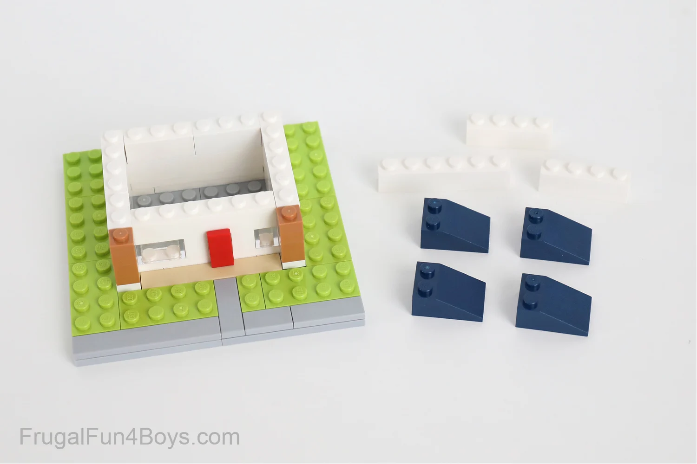
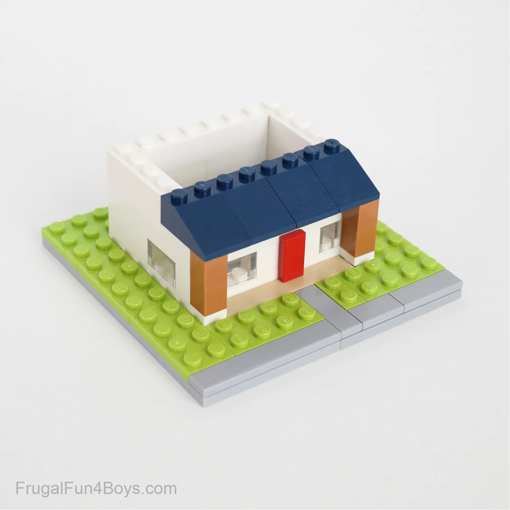

Dit første LEGO hus
Du behøver ikke starte med noget stort for at få glæde af LEGO.
I dette projekt bygger vi et lille hus, hvor du får mulighed for at prøve nogle af de grundlæggende byggeteknikker.
Følg trinene i dit eget tempo, og giv gerne huset dit personlige præg undervejs.

Hvilke LEGO-klodser skal du bruge?
Du behøver ikke et bestemt LEGO-sæt for at bygge dit første lille hus. Du kan sagtens bruge klodser fra forskellige sæt eller dem, du allerede har liggende.
Til projektet er det en fordel at have:
- En byggeplade eller flade klodser til husets fundament.
- Almindelige LEGO-klodser i forskellige størrelser til væggene.
- Flade plader eller skrå klodser til taget.
- En dør og et par vinduer, hvis du har dem.
- Små dekorative klodser til blomster, træer og andre detaljer.
Du bestemmer selv husets størrelse og farver. Mangler du nogle af klodserne, kan du sagtens finde på en anden løsning. Det vigtigste er at bruge fantasien og have det sjovt med byggeriet.
-

Trin 1 -Byg fundamentet
Start med at finde de LEGO-klodser frem, du gerne vil bruge til dit hus.
Vælg en byggeplade eller nogle flade klodser, som kan danne bunden.
Her bestemmer du selv, hvor stort dit hus skal være, og hvordan det skal placeres.Begynd med at bygge en stabil bund, og overvej allerede nu, hvor du gerne vil have indgangen. Du behøver ikke have alle detaljer planlagt fra starten.
Det vigtigste er at skabe et godt udgangspunkt, som du kan bygge videre på. -

Trin 2 – Byg vægge og tag
Når fundamentet er på plads, kan du begynde at bygge husets vægge.
Læg klodserne oven på hinanden, og sørg for, at de sidder godt sammen.
Husk at efterlade plads til en dør og eventuelt et par vinduer, så huset får lidt karakter.Når væggene har den højde, du ønsker, er det tid til taget.
Du kan bruge skrå klodser til et klassisk hustag eller vælge et fladt tag, hvis det passer bedre til dine klodser.
Prøv dig frem, og find den løsning, du bedst kan lide. -

Trin 3 – Gør huset færdigt
Nu begynder den sjove del!
Når selve huset står færdigt, kan du tilføje de små detaljer, der gør det personligt.
Måske skal der være blomster foran døren, en lille have, en sti eller et træ ved siden af huset.Du kan også eksperimentere med forskellige farver, ændre taget eller bygge en lille terrasse. Der er ingen rigtig eller forkert måde at gøre det på. Brug din fantasi, og lad projektet udvikle sig undervejs.
Når du er tilfreds, har du bygget dit første lille LEGO-hus – og måske fået idéer til det næste projekt.
Hvad skal du bygge næste gang?
Hvad skal du bygge næste gang?
Udforsk nye idéer, og find inspiration til dit næste LEGO-projekt.
Find inspiration